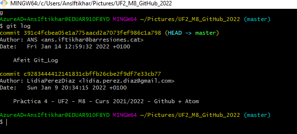

=======
 >>>>>>> a816d067206ef8787ad43a6675067ecacff9a65f
>>>>>>> a816d067206ef8787ad43a6675067ecacff9a65f
>>>>>>> a816d067206ef8787ad43a6675067ecacff9a65f
git log - Curs 2021/2022
El comand git log, serveix per veure tots el commits que s'han relitzats en un repositori local
Comando Revisat per David